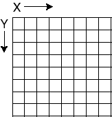

Graphics Objects
The background color of the applet is the color of the drawing area.
It can be set to a pre-defined color or to a custom color.
This will be discussed further in a few pages.
In order to connect your applet to the particular area of the screen
to be painted, the Web browser must pass your paint() method a
reference to a Graphics object.
This object represents the part of the screen filled the applet.
A Graphics object has many methods for doing
graphical things.
It is somewhat like
a "paint" program that has
methods to draw lines, draw
circles, write text, and so on.
The statement:
gr.drawString("Loveliest of trees, the cherry now", 25, 30);
calls the method drawString() of the Graphics object.
It prints the string at the location given by the last two parameters,
25 pixels from the left edge of the applet's area
and 30 pixels from the top edge.
drawString( String str, int x, int y)
- str — the String to draw on the applet's part of the screen
- x — the horizontal distance in pixels from the left edge.
- y — the vertical distance in pixels from the top edge.
|

|
The x and y parameters tell where to place the string within the
applet's area.
This is like graph paper, except
the (0,0) location is the upper left corner (of the applet's area, not
of the full screen.)
Increasing y values move down the area.
The location specified by (x, y) is where to place the lower left part of
the first character of the String.
Distance is measured in pixels.
A pixel
is one of the graph paper squares that
the video screen has been (conceptually) divided into.
If you have set your monitor to a resolution of 800 by 600,
then the screen is divided into 800 horizontal squares and 600 vertical squares.
It is the responsibility of the graphics card and its driver to implement this
idea of graph paper on the actual electronics of you computer system.
A pixel is not one of the little, glowing dots of phosphor on
the monitor screen.
Depending on the resolution you are using,
an image pixel may correspond
to several of these dots or a fraction of one dot.
QUESTION 4:

Here is part of the applet:
gr.drawString("Loveliest of trees, the cherry now", 25, 30);
gr.drawString("Is hung with bloom along the bough", ________, _________ );
Suggest a location for the second line
(assume that characters are 10 pixels high.)